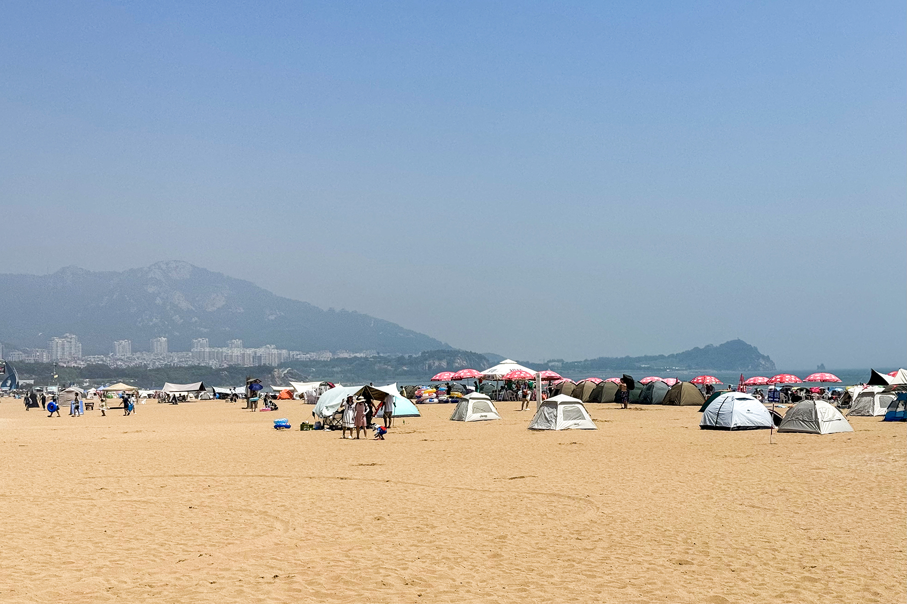
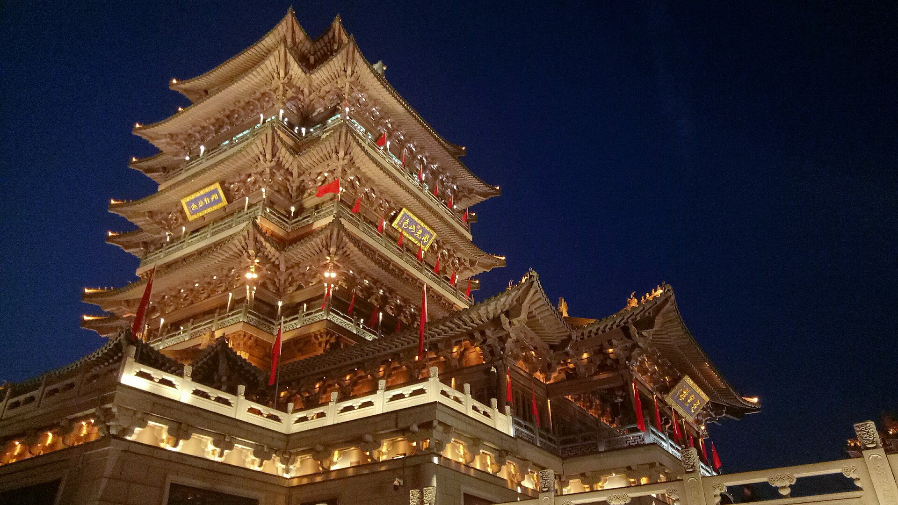
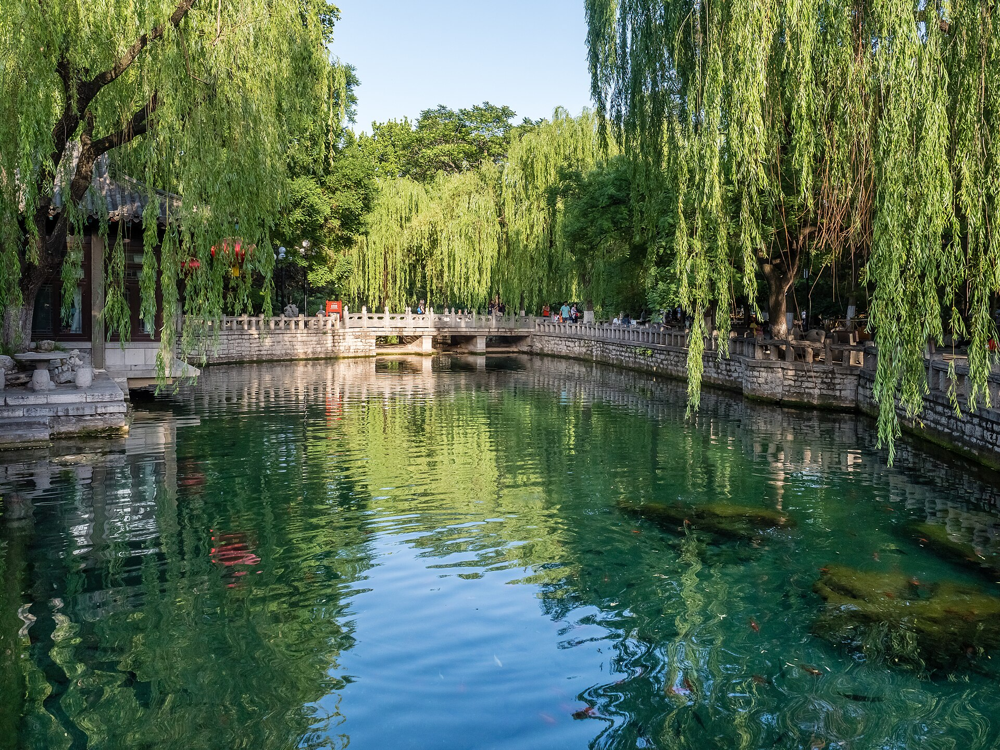
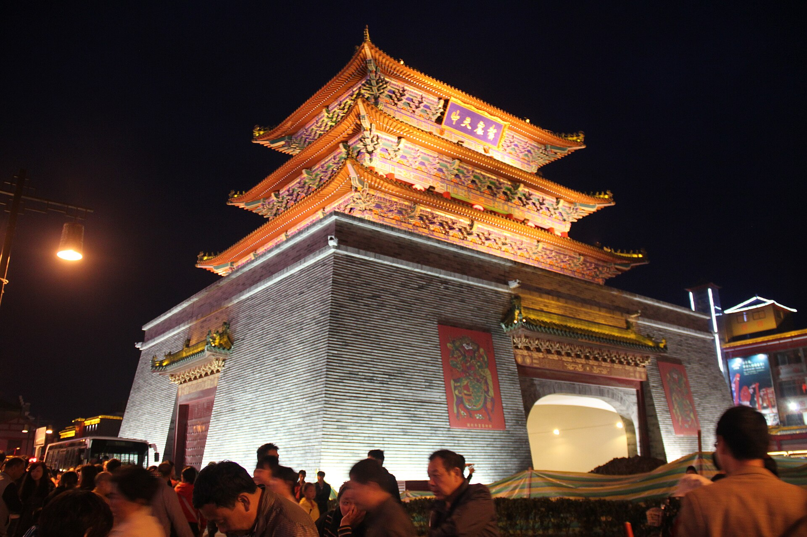

D1
飞青岛
广州白云 → 青岛胶东
2026 年 7 月 20 日至 7 月 26 日｜广州/佛山出发
海边、泉水、下午留白和万岁山夜场，排成一条不爬山、不硬晒、不赶夜路的线。
7天可以塞下四城，但万岁山不是两整天。
简洁版总控。详细走法在后面的折叠卡。
广州白云 → 青岛胶东
八大关 → 二浴 → 石老人
青岛北 → 威海
半月湾 → 猫头山 → 火炬八街
威海 → 济南东
趵突泉 → 郑州东 → 开封
万岁山 → 郑州新郑机场
路上先看这一组，想看细节再展开当天。
先锁转场和万岁山，其他景点按当天状态取舍。
| 项目 | 何时确认 | 在哪里查 | 关键动作 | 没票/晚点怎么处理 |
|---|---|---|---|---|
| 广州白云 → 青岛胶东 | 现在出票 | 航司 App / OTA | 确认落地时间、行李额、青岛酒店接驳。 | 晚到即入住，不安排夜景。 |
| D3 青岛北 → 威海 | D1 晚前 | 12306 | 优先上午到威海；酒店到青岛北预留60—90分钟。 | 晚到只保酒店和威高晚饭。 |
| D5 威海 → 济南东 | D2 晚前 | 12306 | 优先上午到济南，给下午留白。 | 大明湖夜景直接删，不压缩休息。 |
| D6 济南 → 郑州东 → 开封 | D4 晚前 | 12306 | 两段票一起看，郑州东换乘留45分钟以上。 | 衔接不顺时先删黑虎泉，趵突泉后直接去车站。 |
| 万岁山票种与节目 | D5 晚上 | 官方公众号 / 当天公告 | 查夜场、节目单、二次入园、天气与停车。 | D6只看一两场，D7上午补重点。 |
| D7 开封 → 新郑机场 | D5 晚上 | 正规送机平台 | 写清酒店、两人行李、航班号，13:30左右出发。 | 航班明显晚点才考虑机场或郑州东留宿。 |
| 四城酒店 | 现在锁可取消 | 酒店平台 | 保存前台电话、行李寄存、入住与退房时间。 | 优先保留靠主路、好打车的房间。 |
每晚住哪、明早先做什么，提前在手机里固定下来。
| 日期 | 今晚住哪里 | 连住 | 为什么住这里 | 明天第一件事 |
|---|---|---|---|---|
| D1 | 青岛五四广场/浮山所 | 第1晚 / 共2晚 | 落地接驳、晚餐、D2去八大关都顺。 | 07:40前后出发去八大关。 |
| D2 | 青岛五四广场/浮山所 | 第2晚 / 共2晚 | 午休避晒，晚上不必换酒店。 | 按车次倒推60—90分钟到青岛北站。 |
| D3 | 威海威高广场/幸福门 | 第1晚 / 共2晚 | 晚饭、短看海、D4取车方便。 | 确认租车点、驾照与还车规则。 |
| D4 | 威海威高广场/幸福门 | 第2晚 / 共2晚 | 海边兜风后直接休息，不再折返。 | 早起还车/取行李，再去威海站。 |
| D5 | 济南泉城路/宽厚里 | 第1晚 / 共1晚 | 吃饭、短看大明湖、D6去趵突泉都近。 | 07:30前到趵突泉，之后回酒店取行李。 |
| D6 | 开封万岁山/龙亭圈 | 第1晚 / 共1晚 | 夜场结束好打车，D7早上补节目省心。 | 08:30前进园，12:00前出园取行李。 |
| D7 | 正常不住；晚点备机场/郑州东 | 返程日 | 不为住宿倒车，只保送机与航班。 | 直接按航班动态处理返程。 |
参考九寨沟页的现场执行结构：卡片默认折叠，不让手机一打开就是长文。

平安落地、住进交通方便的酒店，不硬加夜景。
国内航班按起飞前至少2小时到机场倒推。带大行李或首飞不熟时，宁可早到。
导航：广州白云国际机场 出发层
主选：打车/网约车直达五四广场或浮山所酒店。省钱备选：按高德实时地铁/机场线换乘，不拿晚到后的时间赌换乘。
导航：青岛 五四广场 浮山所 地铁站 酒店
第一晚只吃海鲜水饺、家常海鲜或面食；不冲远处网红海鲜店。

上午八大关，下午才租车/打车看石老人，不在最晒时暴走。
八大关南侧进入，树荫老建筑为主；走到第二海水浴场和太平角即收，不安排登高。
导航：青岛 八大关 第二海水浴场
五四广场/万象城一带吃饭，回酒店躲开最热时段。下午再看天气和取车时间。
租车版：每站停车后走20—30分钟。打车版：石老人和雕塑园二选一即可；小麦岛只走外侧平缓区。
导航：青岛 石老人海水浴场

早班高铁转威海，下午只做幸福门和海边轻走。
查票参考：2026年7月15日查询到G6989为07:37—09:11，二等座97元/人；最终以12306当日页面为准。
导航：青岛北站
先放行李，不把中午安排成景点。酒店圈优先威高广场、幸福门、悦海公园之间主路。
导航：威海 幸福门 威高广场 酒店
傍晚再出门。灯塔只做轻走停留，晚餐搜“威高广场 鲅鱼水饺”。
开车看海，不爬猫头山，不走长时间晒路。
取车后先看半月湾。猫头山只导航至3号观景台附近，停好车短看，不走主徒步线；遇管控就跳过。
导航：威海 猫头山 3号观景台
这是行程设计的一部分。海边紫外线强，吃饭、补水、睡一会再继续。
火炬八街只看海景街口，不久留拍队；国际海水浴场适合踩水看天色。
导航：威海 火炬八街

高铁到济南后不硬跑景点，晚上状态好再轻看大明湖。
查票参考：2026年7月15日查询到G894为07:26—09:57，二等座281元/人；最终以12306当日页面为准。
导航：威海站
先寄存/入住，下午留白。趵突泉留给D6早上，不拖着行李赶景点。
导航：济南 泉城路 宽厚里 酒店
状态好才去；累了直接在宽厚里吃饭。
导航：济南 大明湖 超然楼

早看趵突泉，再经郑州东转开封，傍晚进万岁山。
趵突泉优先，走到黑虎泉即收。门票、开放和预约按官方当天公告；早进园比中午舒服。
导航：济南 趵突泉 东门
优先12306购买两段高铁/城际组合，郑州东中转换乘至少留45分钟。不要用慢车把下午拖没。
12306：济南西 郑州东；郑州东 开封北
寄存或快速入住后打车进园。入园第一件事看当天节目单，优先排两至三场核心演出；人多就换场。
导航：开封 万岁山武侠城 正门

上午补万岁山，下午只保送机和返程。
按昨天没看成的节目补两三项即可。炎热时优先短距离、有遮阴节目，不把园区走遍。
公众号搜索：开封万岁山武侠城
在酒店/龙亭附近吃饭，行李集中检查身份证、手机、充电宝、航班订单。
建议选18:30后从郑州新郑机场起飞的返广州航班。开封直达新郑机场的早班城际不适配下午航班，不当主方案。
导航：郑州新郑国际机场 T2
车次和航班只作查票起点；付款前必须以航司、12306页面为准。
主选：广州白云飞青岛胶东；出票时优先选不太晚抵达的班次。
落地：带行李优先打车直达五四广场/浮山所；不安排落地后的远距离夜游。
参考车：2026年7月15日查到G6989，07:37—09:11，二等座97元/人。
预留：酒店到青岛北站60—90分钟；晚到威海就只在威高吃饭。
参考车：2026年7月15日查到G894，07:26—09:57，二等座281元/人。
到济南：先住酒店；晚点时删大明湖夜景，不删下午休整。
主选：两段高铁/城际组合，郑州东中转换乘至少预留45分钟。
不选：慢车占掉大半天，不适合本行程。
主选：正规平台预订送机车，13:30出发更从容。
航班：优先18:30后从郑州新郑起飞的返广州航班。
取还：优先神州等正规平台和白天营业网点，提前确认保险、满油规则、停车点。
新手边界：天气差、状态差、取车太晚就改打车。
总共6晚：青岛2晚、威海2晚、济南1晚、开封1晚。
住两晚：D1—D2；中心点浮山所地铁站/五四广场，半径1—1.5公里。
订房词：“浮山所地铁站 酒店”“五四广场 酒店”。
住两晚：D3—D4；中心点威高广场/幸福门，半径1—1.5公里。
避开：偏远海景房和难打车海边民宿。
住一晚：D5；中心点泉城路/宽厚里/恒隆广场，半径1—1.5公里。
适合：吃饭、大明湖夜景、D6早上泉水都方便。
住一晚：D6；龙亭湖西侧/万岁山2公里内或打车10分钟内。
重点：可寄存行李、靠主路、夜场结束后好打车。
评分4.5以上、可免费取消、有电梯、可寄存行李、靠近主路、评论里无明显隔音/卫生反复差评。
入住/退房时间、前台是否24小时、是否可寄存、停车位和费用、火车站或景区打车是否方便。
不爱爬山，所以所有路线按短走、遮阴、午休和可删点来排。
D2早晨｜树荫老建筑和海边，不需要登高。
走法：八大关南侧进入 → 树荫街区 → 第二海水浴场 → 太平角。时长：2.5—3小时。
避坑：不安排栈桥，不为每幢建筑排队，不在中午暴晒。
导航：青岛 八大关 第二海水浴场。
D2下午｜开车短停的海岸串联。
走法：石老人先停 → 雕塑园短走 → 小麦岛外侧看海；每站20—30分钟。
可删：取车晚、暴晒或大风时删小麦岛。避坑：不绕全岛、不赶黄岛跨海线。
D4主体验｜租车看海，不走猫头山徒步线。
走法：半月湾/海源公园 → 猫头山3号观景台短停 → 午休 → 火炬八街 → 国际海水浴场。
避坑：猫头山只开到观景点；雷雨、浓雾、大风就取消租车。
D6早晨｜两小时建立泉城体验。
走法：趵突泉东门进 → 主泉池 → 泉城广场 → 黑虎泉。赶车：先删黑虎泉，不删车站时间。
核对：门票、开放和预约以官方当天公告为准。
D5夜里备选｜休整后状态好才去。
走法：打车到大明湖/超然楼附近，短走看夜景后回酒店。可删：疲劳、下雨或晚到时直接删。
D6傍晚 + D7上午｜本次分两段体验的主景点。
进园前：身份证、充电宝、水、轻便雨具；先在官方公众号看当天节目单。
走法：D6夜场排两三场核心演出；D7上午补昨天遗漏的节目。人气单项排队太长就换节目。
核对：票种、开园、夜场、节目单、二次入园和停车均以景区当期公告为准。
公众号/导航：开封万岁山武侠城

只作开封味道备选，不挤占万岁山时间。
安排：只有D6到开封很早才考虑；否则完全不排。吃法：两人少量分灌汤包、炒凉粉、杏仁茶。
避坑：不把夜市排到D7返程前。
进门前带什么、先看哪里、累了删什么，全部按不爬山和避高温安排。
入园前：防晒、水、舒服鞋、充电宝；早上出发，别等太阳最晒。
入口与路线：导航“青岛 八大关 第二海水浴场”，从南侧靠海一端进入，先走树荫老建筑，再到二浴，最后太平角短停。
必看：树影、老建筑与二浴海岸。可删：太平角；不要为单栋建筑排队。
离开：11点前结束，打车回五四广场/浮山所午饭和午休。
取车前：核对驾照、车况、胎压、油量、保险、还车规则和停车位；手机满电，车内放水和纸巾。
执行：每一站只停20—30分钟；猫头山只到观景台附近，不走徒步线。中午必须回酒店避晒。
必看：半月湾海色、猫头山公路视角、火炬八街街口。可删：大风、雷雨、取车太晚时全部取消租车，改商圈和酒店休息。
离开：天黑前回主路还车/停车，不为日落走陌生海边夜路。
入园前：身份证、官方票务信息、充电宝、水；开放、预约、门票以官方当天公告为准。
执行：优先趵突泉主泉池，再步行至泉城广场；时间够才延伸到黑虎泉，全程控制在2小时左右。
必看：主泉池和泉城广场。可删：黑虎泉，绝不能压缩后续去车站的缓冲。
离开：打车回酒店取行李，再按12306实际车次去济南/济南西站。
入园前：身份证、充电宝、水、纸巾、轻便雨具；先在官方公众号看当天节目单、票种和夜场信息。
执行：D6只排两三场核心演出，排队太长直接换场；D7上午补昨日没看成的节目与轻拍照。
必看：以当天节目单的主舞台与夜场为先。可删：边缘区、排队过长项目和额外夜市。
天气/体力：高温只走遮阴和短距离路线；下雨按景区当天公告调整，别为看全场硬撑。
具体店铺营业和排队会变，优先用关键词找路线内评分稳定的店。
吃：鲅鱼水饺、海鲜水饺、家常海鲜。
搜：“浮山所 海鲜水饺 评分4.5以上”。
吃：鲅鱼水饺、海菜包子、烤鱿鱼、小海鲜。
搜：“威高广场 鲅鱼水饺”。不点游客海鲜套餐。
吃：把子肉、甜沫、油旋、鲁菜小馆。
搜：“济南 泉城路 把子肉”。D5晚餐别吃太撑。
吃：灌汤包、桶子鸡、羊肉炕馍、杏仁茶、炒凉粉。
原则：夜市每样少量分着吃，不喝酒后赶车。
正餐以家常菜、小吃搭配为主，海鲜只做一顿小尝鲜；每次不点太满，转场日以轻食和面食为主。
超过30分钟直接搜“当前位置 + 目标菜 + 评分4.5以上”，限定步行10分钟，不为一间店绕城。
按类别收进一个轻便背包，转场时不反复翻行李。
晚点、下雨、太累时直接删改，不临场硬扛。
直接去青岛酒店入住；取消所有夜景，只在酒店步行范围吃饭。不要在陌生城市晚到后再赶海边。
抵达后只保酒店和附近晚餐，删幸福门/大明湖夜景。转场日不补景点，更不临时租车赶路。
取消租车，改威高广场吃饭和酒店午休；天气转好再短走幸福门。新手不在雨雾海边试路。
优先选郑州东留足45分钟的下一组衔接；济南只保趵突泉。到开封太晚只看一场夜场，D7上午补节目。
先看官方节目单，优先遮阴和短距离项目；高温不把园区走遍，下雨按景区公告换场或缩短停留。
先在航司 App 改签；明显晚到再订机场或郑州东附近酒店。返程日不补开封景点，也不疲劳折返。
这张清单比死记攻略更重要。
票务、开放和价格会变，网页不把它们写成永久事实。
放在行程最末，仅在需要核账时展开查看。
| 项目 | 两人金额 | 用途与边界 |
|---|---|---|
| 往返机票 | 2000元 | 广州白云往返青岛 / 郑州新郑返广州。 |
| 六晚住宿 | 1100元 | 青岛2晚、威海2晚、济南1晚、开封1晚；不住海景房。 |
| 跨城火车/高铁/城际 | 1500元 | 青岛—威海、威海—济南、济南—郑州东—开封。 |
| 威海租车 + 油费停车 | 350元 | D4日用；天气差不租，余额回机动。 |
| 市内交通 / 开封送机 | 400元 | 机场接驳、酒店到车站、D7送郑州新郑机场。 |
| 核心门票 | 350元 | 趵突泉与万岁山等；票种以官方实际为准。 |
| 城市休整与机动 | 600元 | 天气、打车、停车、转场或票价小波动的缓冲。 |
| 餐饮 | 1000元 | 四城日常餐、小吃和一顿海鲜尝鲜。 |
| 总计 | 7300元 | 超出时先删海边加长自驾和额外餐饮，保留海边、休息与万岁山核心体验。 |